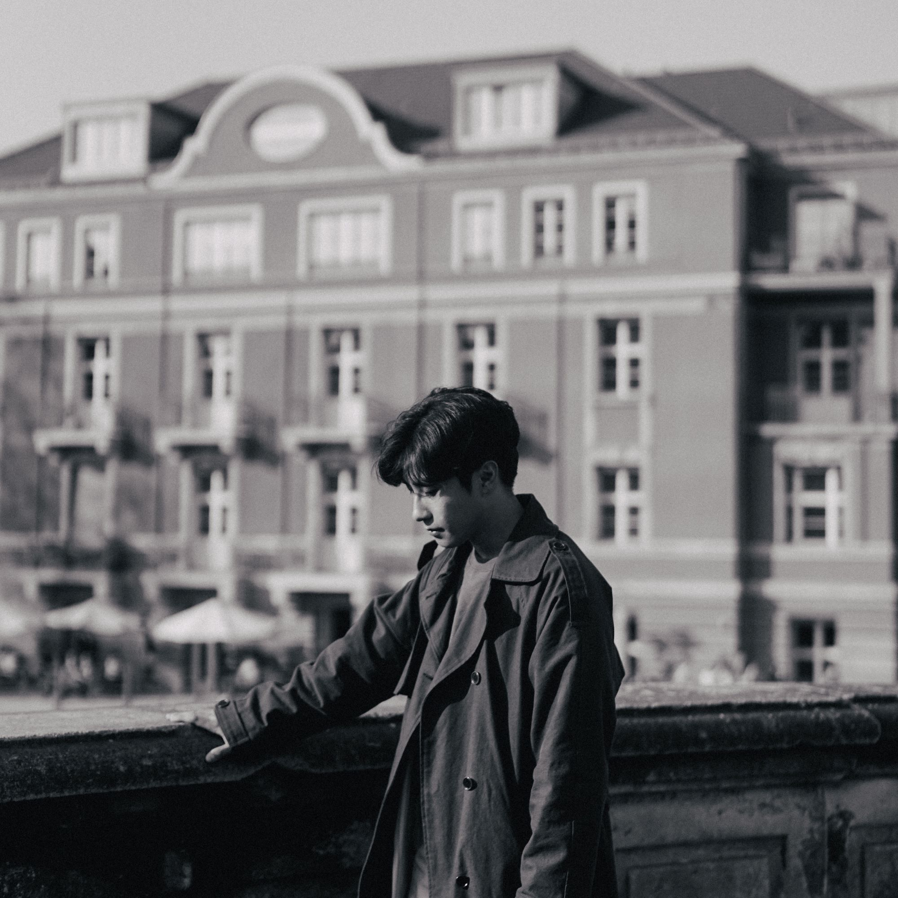
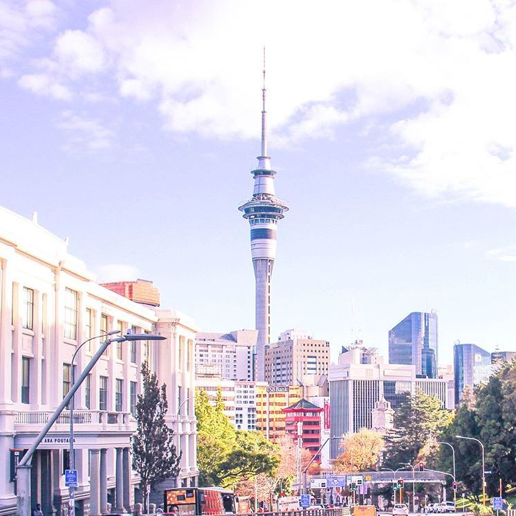
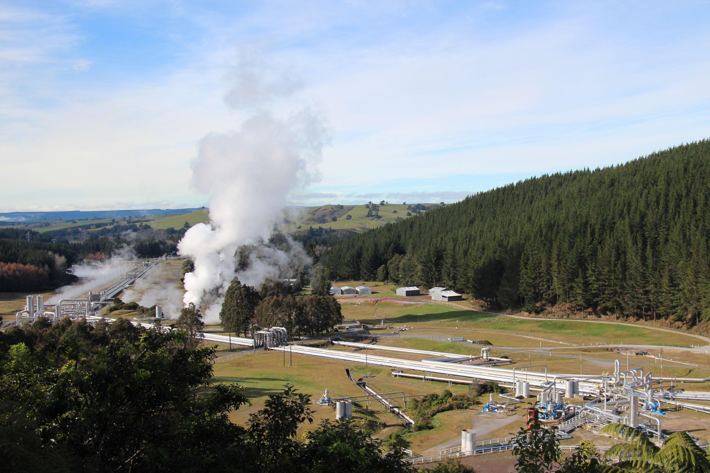
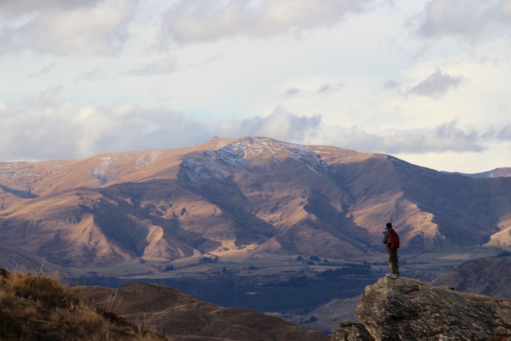
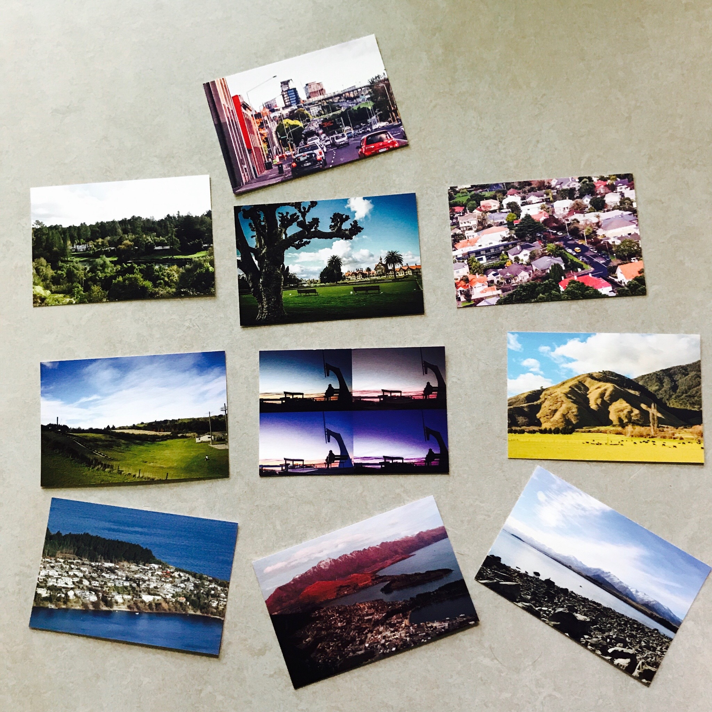

반갑습니다 ! 이 사이트는 나만의 창작물을 만듬으로써 웹 페이지 디자인 능력에 기반이 될 것입니다.
제목은 Point of one's life에서 제 이름을 따 won's life로 했습니다.
intro는 본인 소개, qna는 20문 20답, remembrance는 기억에 남는 이야기, 마지막으로 recommend 메뉴에선 책 한편 소개해드리면서 마치겠습니다.
상단 메뉴 바를 클릭하면 이야기가 하나 씩 펼쳐집니다. 구경해보세요 !
2019년 04월의 베를린, 프리드리히 다리에서
'여행을 일상처럼, 일상을 여행처럼 !'
- Introduction
좌우명입니다. 좌우명은 유명 카피라이터, 박웅현 씨의 '여덟 단어'라는 책에서 깊게 공감을 하고 느낀 말을 가져왔습니다. 이 말에서 저자는 자신의 딸에게 덧붙여 ‘파리로 여행을 갔을 때 에펠탑이나 유명 박물관을 방문하는 것도 좋지만 파리 거리에 있는 카페에서 현지인들처럼 생활하는 것이 더 멋져.’라며 여행자의 태도에 대해 조언하죠.
이 말은 안목의 중요성을 강조합니다. 우리가 여행을 가는 이유는 즐거움, 일상에서의 해방감, 그리고 경험, 안목을 넓혀 삶을 더 풍요롭게 만들기 위해서입니다. 물론 이런 여행이란 특별함을 이미 전제로 가지고 있지만 대중적인 안목에 치우치지 말고 본인의 안목과 일상과 같은 작은 것도 볼 줄 알아야 더 풍요로운 여행이 될 수 있다고 강조합니다.
일상도 마찬가지입니다. 항상 같은 패턴을 가진 일상이지만 그대로 두면 너무 우리 삶이 재미가 없잖아요. 그렇기 때문에 우리가 가장 익숙한 일상을 가만히 내버려둬선 안됩니다. 출근 길에 예쁜 건물이 있으면 사진도 찍어보고, 지나가는 행인들의 옷차림도 구경하고, 오늘 나의 친구들이나 교수님의 표정을 보면서 저 사람의 하루는 어땠을 지 상상도 해보는거죠. 우리가 가끔 하늘을 보면서 날씨가 좋음에 감사함을 느끼는 것도 같은 맥락이 아닐까요?
좌우명 이야기가 좀 길었네요. 본가는 경상남도 진주입니다. 안목과 경험이 중요한 20대를 좀 더 멋지게 보내기 위해서 서울, 건국대학교에 입학했습니다. 도시를 공부하기 위해서 지리학과에 진학했지만 컴퓨터와도 적성이 맞고 재미도 있어서 소프트웨어학과를 부전공 하고있습니다. 올해로 26살, 4학년이니까 이번 학기가 마지막이 되겠네요. 요새는 졸업이라는 큰 전환점을 두고 매일매일 긴장되지만 설레는 삶을 살고 있습니다.
내 안의 나!
- 자문자답 20문 20답
1. 이름이 무엇입니까?
A: 서상원입니다.
2. 이름에 뜻이 있나요?
A: 성 뒤에 좋을 상, 근원 원을 써서 좋은 것의 근원이라는 속 뜻이 있습니다.
3. 서울 생활 어때요?
A: 대학생때 잠깐 있기 좋은 것 같아요. 사람 많은 걸 싫어하기도하고… 지금은 집이 너무 그립네요.
4. 취미가 뭐예요?
A: 컴퓨터 게임을 너무 좋아해요. 말고도 커피 마시는 거, 음악 듣는 거, 가끔 책 읽을 읽거나 여행가는 것 좋아해요.
5. 좋아하는 게임이 뭐예요?
A: 특정 게임을 푹 빠져서 하는 것 보다 다양한 게임을 하는 걸 좋아합니다.
6. 특기가 있을까요?
A: 엄청 잘하진 않지만 기타연주를 할 줄 알아요. 잠깐 밴드 동아리에도 있었죠.
7. 여행지 좀 추천해주세요 !
A: 국내 여행이라면 서울도 좋구요! 강원도 강릉이나 동해도 바다가 있어 좋아요!
8. 해외여행은 어디가 가장 좋았나요?
A: 다 좋았지만 뉴질랜드가 가장 좋았습니다.
9. 여자친구가 있나요?
A: 저만 바라봐주는 고맙고 이쁜 여자친구가 있습니다 !
10. 좋아하는 노래나 가수가 있나요?
A: 다양한 장르를 좋아해서 매일 바뀌어요. 가수는 백예린 좋아합니다.
11. 꿈이 있을까요?
A: 사람이 살기 좋은 도시를 만드는 게 꿈입니다. 인생관의 목표라면 어떤 일을 해도 행복한 사람이 되고 싶네요.
12. 진로 방향은?
A: 지금은 공기업, LH나 관광공사에 들어가는게 목표입니다 !
13. 고민이 있나요?
A: 고민이 많은 편은 아니지만 졸업이라는 큰 관문 앞에서 진로에 대한 고민이 많죠.
14. 장점인 성격?
A: 감성적이에요. 매사 긍정적으로 생각하는 편이기도 하구요.
15. 단점인 성격은?
A: 유혹에 약하고 좀 게으른 편입니다. 다혈질인 점도 단점이 될 때도 있죠. 낯을 많이 가리는 것도 있네요.
16. 아르바이트 경험이 있나요?
A: 카페 아르바이트를 좀 했었죠. 서비스업이 생각보다 적성이 맞았던 것 같아요. 좀 더 직무적인 일은 기후연구실에서 인턴 활동을 했습니다.
17. 소프트웨어학과를 부전공 한 이유?
A: 컴퓨터를 좋아해요. 프로그램을 잘 다루는 편이기도 해서 문과생이지만 자신감이 있었습니다.
18. 소프트웨어학과에서 힘들었던 점?
A: 아무래도 문과졸업을 해서 수학이나 알고리즘 수업에서 힘들었죠. 하지만 코딩하는데에 있어서는 다른 학생들한테 뒤쳐진다 생각한 적은 없었습니다. 그리고 학과가 크다 보니까 부전공, 다전공생을 챙겨주지 않아 스스로 해야 했던 점이 많았어요. 특히 팀플이요.
19. 인간관계가 좋은 편인가요?
A: 장점을 말해줄 수 있는 친구가 있다면 좋은 편이라는 생각이 드네요.
20. 존경하는 사람?
A: 아버지를 존경합니다. 가장 존경하는 멘토이자 롤모델 이십니다. 사랑합니다 !
뉴질랜드를 처음 들어서면 밟게 되는 도시이자 가장 큰 도시인 오클랜드의 도시 경관이다.
여행이 설레기만 해야하나
- 뉴질랜드 기행문
(*제시된 사진들의 출처는 본인임)
뉴질랜드를 고등학생때부터 가고 싶었어요. 지리 선생님께서 뉴질랜드 여행이야기를 들려주시고 그곳의 사진을 보여주시면 이국적인 경관에 놀라곤 했었습니다. 후에 2017년 복무 전역을 하고 복학을 앞둔 23살에 뉴질랜드의 오클랜드에 발을 디딜 수 있었습니다. 하지만 가자마자 마주친 감정은 기대가 아니라 새로운 환경에 대한 막막함이었습니다.
혼자서는 처음으로 여행해보는 해외, 그것도 약 10,000km 떨어진 남반구의 나라는 단 100만원 돈만 가지고 있던 한 청년에게 너무 낯설고, 넓고 외로웠어요. 특히나 비수기인데다가 한국인들이 많이 가지 않는 나라이기 때문에 그 나라는 더욱 낯설었습니다. 그렇기에 인터넷에서도 뉴질랜드에 대해선 많은 정보를 찾을 수 없었습니다. 아차 싶었죠. 돈도 별로 없고 계획이라도 짜고 왔어야 했는데… 여기서 약 한 달 동안 어떻게, 뭘 하면서 있지? 라는 생각이 계속해서 들었습니다. (숙소나 교통편도 3일치만 예약해서 입국했습니다. 너무 막막했죠.)
뉴질랜드는 화산활동이 활발해 지열 발전소가 전력 생산량의 상당량을 차지한다. 사진 속 장소는 와이라케이 발전소이다.
뉴질랜드는 한국의 약 2.5배의 면적을 가지고 있지만 인구는 한국이 10배 더 많습니다. 오클랜드를 벗어나면 밤 8시만 되어도 돌아다니는 사람 하나 찾기 힘들죠. 이런 상황에서 뉴질랜드의 경관이 아무리 아름답다 한들, 눈에 들어 왔겠습니까. 건물 하나 찾기 힘든 자연은 공허함만 남겨주었고 오히려 저를 우울하게 만들었어요. 시골 도시에서 자랐기에 자연이 익숙하다 생각했던 저의 큰 오산이었습니다.23일 일정에 4일정도 그렇게 우울하게 보냈지만 다행히도 금방 익숙해졌습니다. 정확히는 우울해지는 것에 지겨워 했던 것 같아요. 동시에 뉴질랜드의 때묻지 않은 자연 경관도 지겨워지더라고요. 대신에 이 나라의 도시에 있는 것을 감사하게 생각하고, 좌우명인 ‘여행을 일상처럼!’을 행하기로 결심했죠. 관광지 대신에 경로에 있는 도시들에서 그냥 길, 골목을 따라서 다녔습니다. 아침에는 조깅도 하고, 중간에 사진도 찍고 카페에서 커피도 마시고 서점에 가서 책도 읽어보고 말이죠. (식당은 사치였어요. 뉴질랜드 식으로 한 끼를 먹으려면 적게는 2만원 가량 지불해야 합니다.)
뉴질랜드는 북섬, 남섬으로 이루어져 있다. 남섬은 북섬과 다르게 황무지가 많아 여행하는 내내 '연금술사'소설의 주인공이 된 듯 했다.
사실 관광지를 가는 것도 귀찮았습니다. 대부분 ‘뉴질랜드에서 가야하는 곳’은 도시에서 멀리 떨어져있고 한 장소를 방문하면 하루를 다 잡아먹는 스케쥴을 소화해야하거든요. 특히나 저 같은 학생들은 대중교통을 이용해야 하는데, 인구 적고 넓은 나라에 버스가 많이 다닐 리 없었습니다. 한국과 비유하자면 서울에서 강릉 가는 왕복 버스가 가격은 5만원, 하루에 두 대, 그것도 이른 아침 시간에만 있는 느낌입니다. 그래서 자연 경관을 보는 여행에서 도시를 구경하는 여행으로 전향하게 됐죠.
여행 때 찍은 사진으로 엽서를 만들었다. 기념품 대신에 지인들에게 선물로 줬는데 이게 꽤 반응도 좋고 재미도 쏠쏠했다.
물론 뉴질랜드의 자연 경관은 훌륭합니다. 힐링과 레저가 가장 잘 어울리는 관광을 할 수 있는 나라죠. 하지만 만약 후에 여유가 됐을 때 여행을 간다면 반드시 차를 렌트해서 다닐 것 같네요. 뉴질랜드의 목가적인 풍경을 버스에서 창으로만 보는 것은 너무 아쉬웠습니다.
가장 기억에 남고 다시 가라면 가장 가고 싶은 나라입니다. 힘든 기억은 오래 남고 후에는 흔히 말하는 추억 보정이 들어가잖아요. 소극적이었던 태도 때문에 아쉬운 점도 많았어요. 의미도 있었습니다. 내가 누구인지, 무엇을 원하는 지에 대해 많은 생각을 하게 되더라구요. 왜냐하면 그곳에서 저는 누구의 간섭도 받지 않는 혼자였으니까요. 주어진 긴 시간을 스스로가 해보고 싶은 것을 찾아서 하려고 많은 노력을 했던 것 같습니다.
Date: 2020.04.22
“나는 말일세, 바로 이런 운명이었던 거라네”
- 위화의 '인생' 중 p. 250
이 책을 처음 접한 건 정확히 기억 나지 않지만 한창 책 읽기를 싫어했던 초등학생 때였던 것 같습니다. 독서의 중요성을 강조하던 가정에서 자랐지만 오히려 책 읽기를 더 싫어했어요. 이 책을 읽으면서 슬픈 장면에선 슬퍼서 울고 기쁜 장면에선 기뻐서 울었던 건 확실히 기억이 나네요. 그리고 이 책을 읽고나서 책이 재밌을 수 있다는 생각을 했습니다. 그러다가 20년, 올해 초에 중고 책방에서 발견한 이 책을 다시 읽어보고 싶다는 충동이 생겼어요.
‘인생’ 혹은 ‘살아가는 것(개정판 이전)’의 제목인 이 책은 이야기의 구성이 독특합니다. 부잣집 도련님이 가난한 농부로 전락한 ‘푸구이’가 민요를 수집하는 직업을 가진 ‘나’라는 제 3의 인물에게 자신의 일생을 얘기해주면서 시작되죠. 이런 구성이 소설의 보통 구성보다 ‘푸구이’라는 사람의 이야기가 좀 더 이야기스러워지게 만들고 전달력이 친근하게 해준 것 같습니다.
“푸구이, 더 이상 나를 속이지 마세요. 나 유칭이 죽었다는 거 알아요.”
자전의 말에 나는 그 자리에 우뚝 선 채 꼼짝도 할 수가 없었다네. 다리도 확 풀려버렸지. 그러고 있는데 목 주변이 서서히 젖어들더군. 자전의 눈물이었네.
“유칭을 보러 가게 해주세요.”
...중략...
유칭의 무덤 앞에 이르자 자전은 등에서 내려달라고 하더니, 무덤 위에 그대로 엎어졌다네. 눈물이 비 오듯 쏟아졌고, 무덤 위에 놓은 두 손은 꼭 유칭을 쓰다듬는 듯했지. 하지만 기력이 없어 손가락 몇 개를 꼼지락거릴 뿐이었어. 그런 모습을 보니 괴로워서 숨이 탁 막혀버릴 것 같더구먼. 그렇게 몰래 묻어서 자전이 마지막으로 아들 녀석 얼굴 한번 못 보게 하면 안 되는 거였는데. (p. 179, 3장)
자전의 말에 나는 그 자리에 우뚝 선 채 꼼짝도 할 수가 없었다네. 다리도 확 풀려버렸지. 그러고 있는데 목 주변이 서서히 젖어들더군. 자전의 눈물이었네.
“유칭을 보러 가게 해주세요.”
...중략...
유칭의 무덤 앞에 이르자 자전은 등에서 내려달라고 하더니, 무덤 위에 그대로 엎어졌다네. 눈물이 비 오듯 쏟아졌고, 무덤 위에 놓은 두 손은 꼭 유칭을 쓰다듬는 듯했지. 하지만 기력이 없어 손가락 몇 개를 꼼지락거릴 뿐이었어. 그런 모습을 보니 괴로워서 숨이 탁 막혀버릴 것 같더구먼. 그렇게 몰래 묻어서 자전이 마지막으로 아들 녀석 얼굴 한번 못 보게 하면 안 되는 거였는데. (p. 179, 3장)
주인공의 아들인 ‘유칭’이 12살이라는 어린 나이에 허무하게 숨을 거두는 장면 중 하나를 가져왔습니다. 독자에게 ‘유칭’은 객관적인 제 3자의 시선이 아닌 아버지의 시선에서 보여지기 때문에 주인공에게 아들은 어떤 존재인지, 아들을 어떻게 생각하는지에 대해 너무나도 잘 알게 만들었어요. 그리고 죽음이라는 극적인 전개로 독자들에게 더 큰 충격을 줍니다. 이 사건 외에 다른 인물들도 ‘푸구이’에 의해 이야기되기 때문에 사건이 일어날 때 주인공의 감정에 더 깊은 공감을 이끌어냅니다.
위화의 소설 중 우리나라에 꽤 알려진 건 ‘허삼관 매혈기’, ‘인생’ 그리고 ‘형제’가 있습니다. 그 중 우리나라에서 잘 알려진 허삼관 매혈기는 우리나라에선 하정우, 하지원이 주연으로 출연한 영화, ‘허삼관’으로 각색되기도 했죠. 중국의 소설이라 감성이 우리와 다를 줄 알았지만 영화까지 발전하게 된 것을 보아 특유의 해학적인 묘사와 행동이 한국의 감성과 꽤 맞았나 봅니다. 이 세 가지 소설에는 모두 가족사, 가족소설, 농촌 배경이라는 공통점이 있습니다. 사회적 배경은 독자와 많이 다릅니다. 우리가 농촌 사회를 겪어본 세대는 아니잖아요. 위화의 소설은 독자와의 배경적 괴리에도 불구하고 가족의 이야기 안에서 그의 글귀, 표현, 주인공의 행동과 감정변화는 분명히 읽는 사람의 감정을 자극시킵니다. 특히 주인공의 슬픈 감정을 숨김없이 직접적으로 표현하고 동시에 가족이라는 삶의 근본적인 소재를 사용했다는 점은 어느 독자나 주인공의 감정에 공감하게 만드는 것 같아요.
내 한평생을 돌이켜보면 역시나 순식간에 지나온 것 같아. 정말 평범하게 살아왔지. 아버지는 내가 가문을 빛내기를 바라셨지만, 당신은 사람을 잘못 보신 게야. 나는 말일세, 바로 이런 운명이었던 거라네. 젊었을 때는 조상님이 물려준 재산으로 거드름을 피우며 살았고, 그 뒤로는 점점 볼품없어졌지. 나는 그런 삶이 오히려 괜찮았다고 생각하네. 내 주변 사람들을 보게나. 룽얼과 춘성, 그들은 한바탕 위세를 떨치기는 했지만 제 명에 못 죽었지 않은가. 사람들은 그저 평범하게 사는 게 좋은 거야. 아옹다옹해봐야 자기 목숨이나 내놓게 될 뿐이라네. 나를 보게나. 말로 하자면 점점 꼴이 우스워졌지만 명줄은 얼마나 질기냔 말이야. 내가 아는 사람들은 하나가 죽으면 또 하나가 죽고 그렇게 다 떠나갔지만, 나는 아직 살아 있지 않은가. (p. 250, 마지막 장)
이야기를 많이 해주고 싶어하는 성격 덕분에 이 소설을 이미 주변에 많이 추천 하고 있습니다. 너무 슬펐다는 반응이 많았어요. 이야기도 재밌고 감성적이지만 작가가 말하고자 하는 바 역시 중요하겠죠. 그래도 제목이 ‘인생’이니까요 ! 간단히 저의 생각과 함께 추천의 글을 맺겠습니다. 마지막에 푸구이는 자신의 인생은 평범했고 그것이 운명과 맞아 결국 지금까지 살아있는 원동력이 되었음을 강조하는데요. ‘인생은 부제, 살아 간다는 것 자체를 위해 살아가는 것 그 과정이지 그 이외의 것은 사실 아무것도 아니다.’ 정도로 맺을 수 있을거 같습니다. 마지막 인용은 멀쩡하지 않은 신랑을 다행이라 여기는 해학적이면서도 슬픈 상황을 가져왔습니다.
“푸구이, 내 펑샤의 혼처를 찾았네. 성안에 살고 운송 일을 하는데, 돈을 아주 많이 번다네.”
조건이 그렇게 좋다는 게 믿기지가 않아서 대장이 장난을 치는 줄 알았지.
“대장님, 놀리지 마세요."
“내가 왜 장난을 쳐? 이름은 완얼시이고, 머리가 한쪽으로 기울어진 사람이라네. 머리통을 어깨에 기대고 있는데, 아무리 해도 똑바로 서질 않는다는군.”
머리가 한쪽으로 기울어졌다는 소리를 듣고 나서야 그 말을 믿을 수 있었지.
...중략...
“조건이 그렇게 좋은 사람이 우리 펑샤를 원할까요?”
“그런데 머리가 한쪽으로 기울었대.”
자전도 그제야 조금 마음을 놓았지. (p. 212)
조건이 그렇게 좋다는 게 믿기지가 않아서 대장이 장난을 치는 줄 알았지.
“대장님, 놀리지 마세요."
“내가 왜 장난을 쳐? 이름은 완얼시이고, 머리가 한쪽으로 기울어진 사람이라네. 머리통을 어깨에 기대고 있는데, 아무리 해도 똑바로 서질 않는다는군.”
머리가 한쪽으로 기울어졌다는 소리를 듣고 나서야 그 말을 믿을 수 있었지.
...중략...
“조건이 그렇게 좋은 사람이 우리 펑샤를 원할까요?”
“그런데 머리가 한쪽으로 기울었대.”
자전도 그제야 조금 마음을 놓았지. (p. 212)